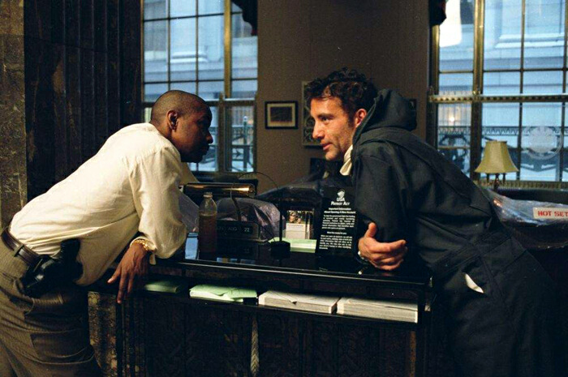

Welcome to Film A Day. Flippant film criticism. Daily.
Join the Conversation
#FilmADay #FilmInAFrame
March 01
March 02
March 03
March 04
March 05
March 06
March 07
March 08
March 09
March 10
March 11
March 12
March 13
March 14
March 15
March 16
March 17
March 18
March 19
March 20
March 21
March 22
March 23
March 24
March 25
March 26
March 27
March 28

March 29
March 30
March 31